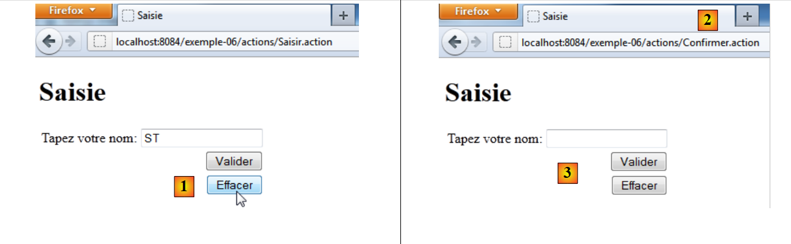

8. Beispiel 06 – Die Sitzung
8.1. Der Begriff der Sitzung
Wenn sich ein Client-Browser zum ersten Mal mit einer Webanwendung verbindet, erhält er ein Sitzungstoken, eine eindeutige Zeichenfolge, die er bei jeder neuen Anfrage an die Webanwendung zurücksendet. Dadurch kann die Webanwendung den Client-Browser erkennen. Mit diesem Sitzungstoken kann sie dann Daten verknüpfen. Diese Daten gehören zu einem einzigen Client-Browser. So entsteht im Laufe der Anfragen des Client-Browsers ein Speicher.
 |
Wie oben dargestellt, verfügt jeder Benutzer (Browser) über einen eigenen Speicher, der als seine Sitzung bezeichnet wird. Dieser Speicher wird von allen Anfragen desselben Benutzers gemeinsam genutzt. Es gibt außerdem einen übergeordneten Speicher, der als Anwendungsspeicher bezeichnet wird. Dieser Speicher wird von allen Anfragen aller Benutzer gemeinsam genutzt. Er ist in der Regel schreibgeschützt.
8.2. Das NetBeans-Projekt
 |
Das Projekt [exemple-06] wurde durch Kopieren des Projekts [exemple-05] erstellt. Wir werden einige Elemente ändern, um
- die Benutzersitzung nutzen zu können.
- Eine neue Aktion „[Effacer] [1]“ hinzufügen, um das Eingabefeld zu löschen.
8.3. Configuration
Die Datei [struts.xml] ändert sich wie folgt:
<?xml version="1.0" encoding="UTF-8" ?>
<!DOCTYPE struts PUBLIC
"-//Apache Software Foundation//DTD Struts Configuration 2.0//EN"
"http://struts.apache.org/dtds/struts-2.0.dtd">
<struts>
<!-- Internationalisierung -->
<constant name="struts.custom.i18n.resources" value="messages" />
<!-- Standardpaket -->
<package name="default" namespace="/" extends="struts-default">
<default-action-ref name="index" />
<action name="index">
<result type="redirectAction">
<param name="actionName">Saisir</param>
<param name="namespace">/actions</param>
</result>
</action>
</package>
<!-- Aktionspaket -->
<package name="actions" namespace="/actions" extends="struts-default">
<action name="Saisir">
<result name="success">/vues/Saisie.jsp</result>
</action>
<action name="Confirmer" class="actions.Confirmer">
<result name="success">/vues/Confirmation.jsp</result>
</action>
<action name="Effacer" class="actions.Effacer">
<result name="success">/vues/Saisie.jsp</result>
</action>
</package>
</struts>
Die Zeilen 27–29 definieren eine neue Aktion [Effacer], die einer Klasse [Effacer] zugeordnet ist. Die Antwort auf diese Aktion ist die Ansicht [Saisie.jsp].
8.4. Die Aktion [Confirmer]
Sie entwickelt sich wie folgt:
package actions;
import com.opensymphony.xwork2.ActionSupport;
import java.util.Map;
import org.apache.struts2.interceptor.SessionAware;
public class Confirmer extends ActionSupport implements SessionAware{
// Vorlage
private String nom;
// Sitzung
private Map<String, Object> session;
// Getter und Setter
public String getNom() {
return nom;
}
public void setNom(String nom) {
this.nom = nom;
}
@Override
public void setSession(Map<String, Object> session) {
this.session=session;
}
@Override
public String execute(){
// Der Name wird in die Sitzung eingefügt
session.put("nom",nom);
// Navigation
return SUCCESS;
}
}
- Zeile 7: Die Klasse [Confirmer] implementiert die Schnittstelle SessionAware. Diese Schnittstelle verfügt nur über eine Methode, nämlich die Methode setSession in den Zeilen 25–27. Vor dem Aufruf der Methode execute fügt einer der Request-Interceptors über die Methode setSession die Benutzersitzung in Form eines Map<String, Object>-Wörterbuchs ein (Zeile 25). Wir entscheiden uns, dieses Wörterbuch im Feld session in Zeile 12 zu speichern.
- Zeilen 30–34: die Methode execute der Aktion. Bei ihrer Ausführung wurde das Feld session von einem der Interceptoren initialisiert, ebenso wie das Feld nom von einem anderen Interceptor. Dieses Wörterbuch session wird verwendet, um das Feld nom darin zu speichern. Auf diese Weise wird der Name Teil des Speichers des Benutzers und steht für alle seine Abfragen zur Verfügung.
8.5. Die Sichten [Confirmation.jsp] und [Saisie.jsp]
Die Ansicht [Confirmation.jsp] bleibt unverändert. Die Ansicht [Saisie.jsp] ändert sich wie folgt:
<%@page contentType="text/html" pageEncoding="UTF-8"%>
<%@ taglib prefix="s" uri="/struts-tags" %>
<!DOCTYPE html>
<html>
<head>
<meta http-equiv="Content-Type" content="text/html; charset=UTF-8">
<title><s:text name="saisie.titre1"/></title>
</head>
<body>
<h1><s:text name="saisie.titre2"/></h1>
<s:form action="Confirmer">
<s:textfield key="saisie.libelle" name="nom" value="%{#attr['nom']}"/>
<s:submit key="saisie.valider" action="Confirmer"/>
<s:submit key="saisie.effacer" action="Effacer"/>
</s:form>
</body>
</html>
- Zeile 12: Wir fügen dem Tag <s:textfield>. ein Attribut value hinzu. Dieses Attribut legt den Wert fest, der im Eingabefeld angezeigt werden soll. Ohne dieses Attribut gilt: value = name. Hier ist der Wert des Attributs ein OGNL-Ausdruck (Object-Graph Navigation Language) der Form %{expression_à_évaluer}. Hier lautet der auszuwertende Ausdruck #attr['nom']. Das Attribut nom wird in dieser Reihenfolge in der aktuellen Aktion, der Seite, der Abfrage, der Sitzung und der Anwendung gesucht. Da die Aktion [Confirmer] das Attribut nom in die Sitzung einfügt, wird es dort gefunden. Dies zeigt die folgende Abfrage:
 |
Bei [1] lautete der eingegebene Name ST. Es ist bekannt, dass die Aktion [Confirmer] diesen Namen in die Sitzung geschrieben hat. Der Link [2] führt uns zur URL [3]. Die Ansicht [Saisie.jsp] wird angezeigt. Für das Eingabefeld ermöglicht das Attribut %{#attr['nom']} das Abrufen des Namens aus der Sitzung.
- Zeile 14: Die Schaltfläche [Effacer] löst die Ausführung der Aktion [Effacer] und die Anzeige der Ansicht [Saisie.jsp] aus.
<action name="Effacer" class="actions.Effacer">
<result name="success">/vues/Saisie.jsp</result>
</action>
8.6. Die Aktion [Effacer]
Der Code der Aktion [Effacer] lautet wie folgt:
package actions;
import com.opensymphony.xwork2.ActionSupport;
import java.util.Map;
import org.apache.struts2.interceptor.SessionAware;
public class Effacer extends ActionSupport implements SessionAware{
// Sitzung
private Map<String, Object> session;
@Override
public String execute(){
// Der Name wird aus der Sitzung abgerufen
String nom=(String)session.get("nom");
// Bei Bedarf wird er aus der Sitzung entfernt
if(nom!=null){
session.remove("nom");
}
// Navigation
return SUCCESS;
}
@Override
public void setSession(Map<String, Object> map) {
this.session=map;
}
}
- Zeile 7: Die Klasse [Effacer] implementiert die Schnittstelle [SessionAware], genau wie es die Aktion [Confirmer] tat.
- Zeile 13: Die Aktion [Effacer] muss den Inhalt des Eingabefelds für den Namen in der Ansicht [Saisie.jsp] löschen. Da diese Ansicht diesen Namen aus der Sitzung abruft, muss der Name aus der Sitzung entfernt werden. Dies übernimmt die Methode execute.
Schauen wir uns an, wie das aussieht:
 |
In [1] möchten wir das Eingabefeld löschen. Wir klicken auf die Schaltfläche [Effacer].
<s:submit key="saisie.effacer" action="Effacer"/>
Die Aktion [Effacer] wird ausgeführt. In [2] ist zu erkennen, dass die aufgerufene URL die der Aktion [Confirmer] war. Dies ist auf das Tag <s:form> im Formular zurückzuführen:
<s:form action="Confirmer">
, wodurch das Formular an die Aktion [Confirmer] gesendet wird. Beim Klicken auf die Schaltfläche [Effacer] wird der Parameter
action:Effacer=Effacer
an die URL [/actions/Confirmer.action] gesendet. Struts verwendet diesen Parameter, um die gesendeten Daten von der Aktion [Effacer] verarbeiten zu lassen. Diese entfernt den Sitzungsnamen. Die Seite [Saisie.jsp] ist die Antwort der Aktion [Effacer]:
<action name="Effacer" class="actions.Effacer">
<result name="success">/vues/Saisie.jsp</result>
</action>
Diese Aktion, die den Sitzungsnamen anzeigt, gibt nun eine leere Zeichenfolge aus: [3].
Wir haben mehrere einfache Beispiele geschrieben, um wichtige Konzepte von Struts 2 vorzustellen:
- die Internationalisierung von Seiten
- die Einfügung von über „POST“ übermittelten Parametern in die Felder der Aktionen
- das Konzept der Sitzung
- die Verknüpfung zwischen Aktionen und Ansichten
Nachdem wir uns diese Konzepte angeeignet haben, können wir uns nun komplexeren Beispielen zuwenden. Zunächst stellen wir die verschiedenen Tags vor, die in einem Formular verwendet werden können.